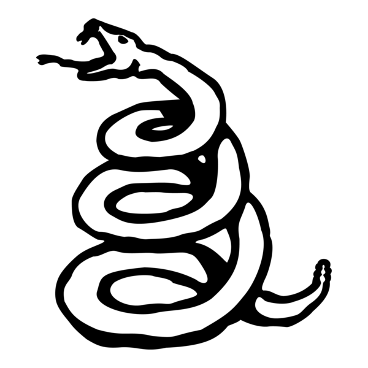
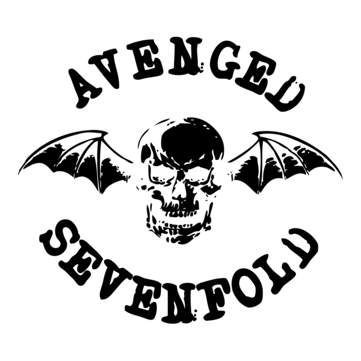
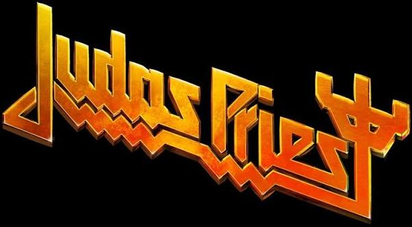

28 • 29 • 30 OUTUBRO 2026
FREQUENCY
UPRISING
Um festival de rock que reúne grandes nomes da música em três dias de muita energia.
📍 Autódromo de Interlagos — São Paulo
VER LINE-UPO QUE ESPERAR
TRÊS DIAS DE ROCK
GRANDES BANDAS
Metallica, AC/DC, Foo Fighters, Judas Priest, Sepultura e muito mais.
DOIS PALCOS
Apresentações simultâneas nos palcos Freq e Uprising.
EXPERIÊNCIA
Música, público e uma atmosfera criada especialmente para quem ama rock.
ATRAÇÕES PRINCIPAIS
OS GRANDES NOMES
Confira algumas das bandas que fazem parte do Frequency Uprising.
VER TODAS

